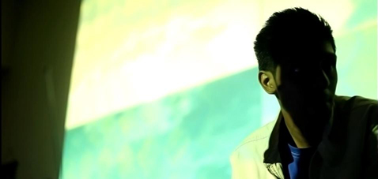

BIOGRAPHY
Use this section to copy-paste content in event of emergency! :D
Shivacult is the psychedelic/spiritual/Higher realmic ART project of Harshavardhan who is based in Hyderabad, India.
Shivacult is the project that was born out of a fascination for the Dravidian-Aryanized God Shiva: His attainment of cosmic powers by the conquest of the unstable mind and his dwellings on sexuality and spirituality.
Marrying a thousand year old Indian Carnatic tradition of music with the latest cutting edge music tools, Shivacult strings intricate phrases of melody with electronically synthesized elements surpassing sonic capabilities. He brings alive the ancient Carnatic tradition of India, focusing on the aesthetic aspects of the “Raga” system and its emotional capabilities.
Born into a family of classical musicians, Shivacult was greatly influenced by his mother Smt Anuradha Sreedhar, a carnatic vocalist herself and received initial vocal training from other local stalwarts of Hyderabad such as Shri Nedunuri Shyamakrishna and Smt Sundari Janakiraman. Being a self trained producer who was focusing on his Trance project ‘Godspeed’, he was introduced to global downtempo and psybient sounds by reknown Tilos radio (Hungary) artist Dakta Dub at Monkey studios where he learnt to use a set of Turntables. Thus began his search for quality sound, his urge to fuse his natural talents into what is now ‘Shivacult’.
Shivacult is now actively involved in making a revolutionary community radio called 'Monkey Radio India', along with Dakta Dub, Mr.Nobody, Selekta Chakkra and Gergely Laszlo-zwikl. www.monkeyradio.in promotes culture and spiritually uplifting music from around the world.
Shivacult has performed alongside international artists such as Temple one (UK), Psykovsky (Rus), Rudy Roots Selekta (Fr), NZ Selekta (Rus) and Apache Indian(UK) . He has also been featured in N magazine (Hyd)and Deccan chronicle (Hyd) in recognition of his underground music productions. Shivacult, who is also a visual artist, web developer and a writer, is now experimenting with Live Performance under the alias known as 'Shivacult++' and his interactive project, Foliage".